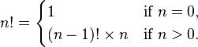

Como hacemos:
ls -l pepe*
Que es "ls" y que es "-l pepe*"
$ which ls
/bin/ls
O sea que "ls" es un programa
y "-l pepe*"... ¡Argumentos!
void main(void)
void main(int argc, char *argv[])
void main(int argc, char *argv[], char *envp[])
#include <stdio.h>
void main(int argc,char *argv[]) {
char *str1="Hola ";
char *str2=", que queres hacer hoy?\n";
if(argc>1) {
printf("%s%s%s", str1, argv[1], str2);
}
}
(¿no mas parte del programa?)
Ejemplo: basta con apuntar una cámara al monitor que muestra la imagen que muestra esa cámara. El efecto es verdaderamente curioso, en especial cuando se mueve la cámara alrededor del monitor.
El Triángulo de Sierpinski es un fractal, y los fractales
los podemos ver como imagenes recursivas.
Más información didáctica sobre fractales (en ingles).
Un ejemplo sencillo de un algoritmo recursivo es el factorial:
¿Qué pasa si se hace una llamada recursiva que no termina?
#include <stdlib.h>
#define MAX_STR 20
int *pi;
char *pc;
char *str;
pi = (int *) malloc( sizeof(int) );
pc = (char *) malloc( sizeof(char) );
str = (char *) malloc( sizeof(char) * MAX_STR );
Por ejemplo, puedo crear un vector en forma dinámica:
#include <stdlib.h>
#include <stdio.h>
void main(void) {
char *str, tam;
printf("Ingrese el tamaño de cadena deseado: ");
scanf("%d",&tam);
setbuf(stdin, NULL); // Limpio el buffer de teclado
str = (char *) malloc ( sizeof(char) * tam );
printf("Ingrese su cadena: ");
fgets(str, tam, stdin);
printf("\nSu cadena es: %s",str);
free(str);
}
Idem a malloc pero toda la memoria es
borrada (clear) "con ceros" antes de asignarnosla.
Intenta redimensionar el area de memoria asignada
y trabaja como malloc (no inicializa la memoria).
Para liberar la memoria que pedimos
(¡Seamos "ecológicos"!)
void fun(int n) {
int arr[n];
// ......
}
Esto da error si compilamos con:
gcc -Wall -std=c89 -pedantic-errors -o prog mi_variable_array.c
Los arreglos de tamaño variable fueron introducidos en el C99.
#include <stdio.h>
#include <stdlib.h>
#include <string.h>
int main(void) {
char *string;
char *str1 = "abcdefghi";
string = (char *) malloc(strlen(str1)+1);
strcpy(string, str1);
printf("%s\n", string);
free(string);
return 0;
}